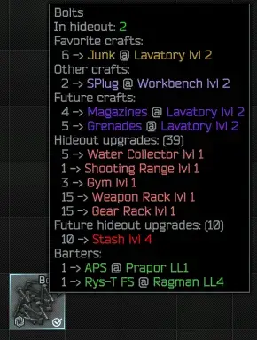
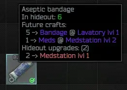
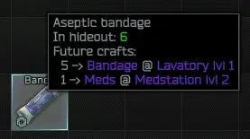
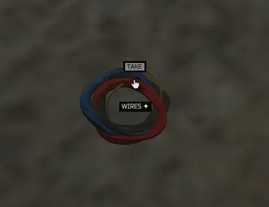
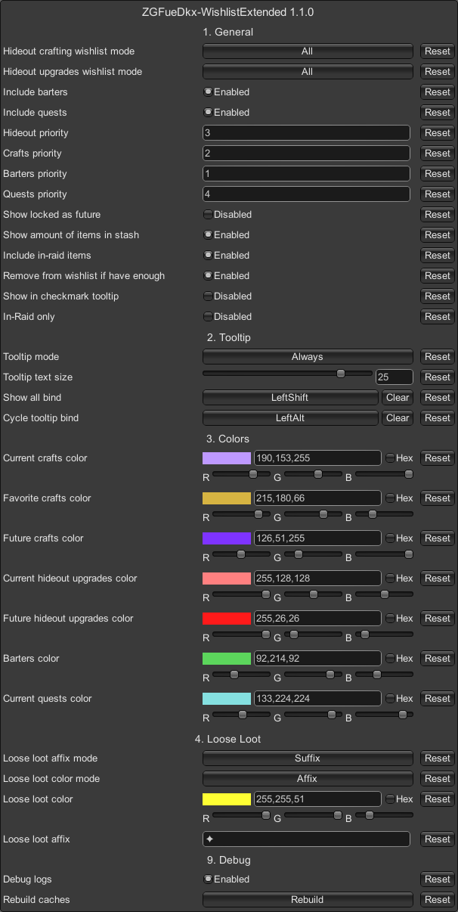

Wishlist Extended
- Downloads
- 5,287
- Favourites
- 29
- Mod lists
- 48
Wishlist Extended is a mod for SPT that expands the built-in auto-wishlist system with additional customization options. It allows you to control which crafts and hideout upgrades are automatically wishlisted, and also adds support for automatically wishlisting items required for barters.
Make sure to visit Configuration tab!
Features
- Replaces the build-in auto-wishlist system with additional features
- Allows you to auto-wishlist crafts, hideout upgrade requirements and barters
- You can select which crafts should be wishlisted - none, favorite, current, all
- You can select which hideout requirements should be wishlisted - none, current, not-locked, all
- In-game loose loot highlight
- Displays total amount of items in hideout - works also in-raid
- Heavily customizable
- Can work in client-only mode - in such case, barters will not be available for auto-wishlisting
- Blazing fast - unlike other mods, this mod caches almost everything so there is almost no performance impact
- Can detect if hideout upgrades require FiR items or not
Key differences from other mods
While mods like UI Fixes and More Checkmarks offer similar functionality, Wishlist Extended focuses on a different goal. It is designed to provide a fast and highly configurable auto-wishlist system with minimal overhead and no unnecessary features.
Showcase
Tooltip

FiR vs Non-FiR for hideout upgrades


In-game loose loot

Configuration
You can access config while in-game by pressing F12 key and then selecting ZGFueDkx-WishlistExtended tab.

General
- Hideout crafting wishlist mode - Specifies which crafts should be wishlisted
- Disabled - don’t include any crafts
- Favorite - include only favorite crafts
- Current - include all currently available crafts
- All - include all crafts (even future ones)
- Hideout upgrades wishlist mode - Specifies which hideout upgrades should be wishlisted
- Disabled - don’t include any upgrades
- Current - include all currently available upgrades
- All - include all hideout upgrades (even future ones)
- Include barters - Whether or not to include barters. Mod must be installed on the server for barters wishlist!
- Include quests - Whether or not to include current quests
- Crafts priority - Icon priority for craftings - higher value is more important
- Hideout priority - Icon priority for hideout upgrades - higher value is more important
- Barters priority - Icon priority for barters - higher value is more important
- Quests priority - Icon priority for quests - higher value is more important
- Show locked as future - Whether locked upgrades/crafts should be listed as future instead of current
- Show amount of items in stash - Whether total amount of items in stash should be displayed in the tooltip
- Include in-raid items - Whether items in inventory should be included in amount of items in stash
- Remove from wishlist if have enough - Whether items should be removed from wishlist if you have enough items. If crafts or barters are enabled, item will not be removed if it’s present in either of these categories
- Show in checkmark tooltip - Whether wishlist details should be also shown in checkmark tooltip
- In-Raid only - Whether the auto-generated wishlist should work only in raid. Manual wishlist will work regardless
Tooltips
- Tooltip mode - Defines the behavior of tooltip
- Disabled - no wishlist details in the tooltip
- Always - no binds, everything is shown
- Hide - don’t show anything, use ‘Show all’ bind to show
- Cycle - only one category, use ‘Cycle tooltip’ bind to change, use ‘Show all’ bind to show all
- HideFuture - hide future crafts/modules, use ‘Show all’ bind to show them
- Tooltip text size - Determines size of the tooltip text. 30 is normal, 0 is extremely small
- Show all bind - Shows info hidden by currently selected ‘Tooltip mode’
- Cycle tooltip bind - When pressed, category displayed in tooltip is changed (Cycle tooltip mode only)
Colors
- Current crafts color - Color of current crafts in tooltip
- Favorite crafts color - Color of favorite crafts in tooltip
- Future crafts color - Color of future crafts in tooltip
- Current hideout upgrades color - Color of current hideout upgrades in tooltip
- Future hideout upgrades color - Color of future hideout upgrades in tooltip
- Barters color - Color of barters in tooltip
- Current quests color - Color of current quests in tooltip
Loose Loot
- Loose loot affix mode - Specifies how to add the affix to loose loot names
- Disabled - do nothing
- Prefix - show the affix before the item name
- Suffix - show the affix after the item name
- Loose loot color mode - Specifies how loose loot names will be colored
- Disabled - do nothing
- Name - set the color of the item name
- Affix - set the color of the affix
- Both - set the color of both the item name and the affix
- Loose loot color - Color of the item name (only in Color mode)
- Loose loot affix - Affix to show next to the item name when enabled
Fresh install
- Make sure that both client and server are closed.
- Download mod by pressing Download button at the top of this page or visit releases page on GitHub.
- Make sure that mod version matches your game version.
- Open or extract zip file.
- Drag and drop
BepInExandSPTdirectories to the root of your SPT directory. - Start server and client to make sure that mod is working.
Updating
Most of updates don’t break anything so follow the same steps as in Fresh install and select to overwrite files when prompted.
If you found some incompatible mod, please let me know in the comments.
General rules
This mod completely overrides
IsInWishlistandGetWishlistfunctions - any mod that tries to patch them will most likely not work.
Other than that, this mod should work with almost all mods - it does its job by not-so-aggressive patching (except mentioned wishlist patches) and usage of API provided by EFT/SPT.
Compatible mods
- UI Fixes by Tyfon
- Hideout In Progress by Tyfon -
cache will not be updated after transferring items, you will have to wait for cache invalidation to see changes in the wishlist tooltip!This shouldn’t be the case since Hideout In Progress version 2.0.2 - Show Me The Money by swiftxp
Incompatible mods
- No known incompatible mods
Known Issues
- Non-FiR items will have wishlist icon even if hideout upgrades require FiR items
License
Copyright © 2025-2026 danx91 (aka ZGFueDkx)
This program is free software: you can redistribute it and/or modify it under the terms of the GNU General Public License as published by the Free Software Foundation, either version 3 of the License, or (at your option) any later version.
This program is distributed in the hope that it will be useful, but WITHOUT ANY WARRANTY; without even the implied warranty of MERCHANTABILITY or FITNESS FOR A PARTICULAR PURPOSE. See the GNU General Public License for more details.
If you believe that this software infringes your or someone else’s copyrights, please feel free to contact me via Discord (danx91) so we can try to resolve the issue amicably.
If you enjoy my work, you can support me on ko-fi.
Version
1.1.1
Fixed issue with “Remove if have enough” option
Version
1.1.0
Config changes - please make sure to visit F12 menu and adjust settings once again
Changes
- Added option to include items needed for current quests
- Added option to remove items from wishlist if there is enough items for all upgrades and quests
- Added option to change tooltip text size
- Added option include in-raid items to stash count
- Added option to also show wishlist detail in checkmark tooltip
- Wishlist icon now properly is shown only on FiR items when FiR is required
- Barters list is now cached on the server
- Better detection of locked upgrades and craftings
- Improved working of tooltip cycle mode
- Added tooltip sorting
Bug fixes
- Fixed stash count not updating
- Fixed NullReference error (issue #2)
- Fixed wishlist tooltip appearing on some buttons
- Fixed wrong wishlist icon being displayed
Version
1.0.0
Initial version